1. Copiar les dades del projecte
No fa falta crear les carpetes manualment perquè he utilitzat el fitxer ZIP, que ja conté l'estructura del projecte. Després de copiar-ne el contingut, podem comprovar que les carpetes hi són amb l'ordre ls.
En executar l'ordre, es mostren les carpetes asistente_tutoria, cuaderno i servicio_modelo.
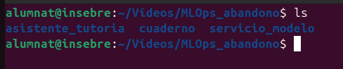
↑ Tornar a l'índex
2. Crear l'entorn de Python i instal·lar les llibreries
Primer actualitzem la llista de paquets del sistema i instal·lem python3-venv i curl, que necessitarem per preparar l'entorn i continuar amb la instal·lació.
sudo apt update
sudo apt install -y python3-venv curl
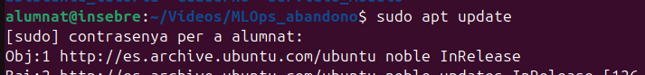
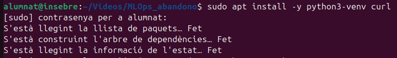
A continuació, creem un entorn virtual anomenat venv i l'activem. Això permet instal·lar les llibreries del projecte en un entorn separat.
python3 -m venv venv
source venv/bin/activate
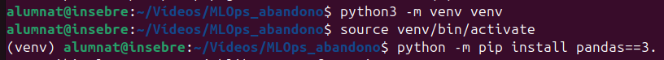
Amb l'entorn activat, instal·lem les llibreries que apareixen en el procediment: pandas, scikit-learn, joblib, fastapi, uvicorn i requests.
python -m pip install pandas==3.1.1 scikit-learn==1.9.1 joblib==1.6.0 fastapi==0.162.2 uvicorn==0.54.0 requests==2.34.2
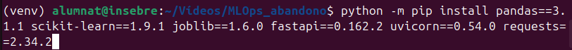
Finalment, comprovem que les llibreries es poden importar correctament. Si el terminal mostra ok, la comprovació s'ha completat.
python -c "import sklearn, fastapi, uvicorn, pandas, requests; print('ok')"
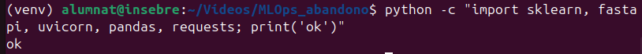
↑ Tornar a l'índex
3. Instal·lar Ollama i descarregar el model de llenguatge
Amb l'entorn preparat, instal·lem Ollama utilitzant l'ordre que es mostra a continuació. Aquesta eina permet executar models de llenguatge en l'equip.
curl -fsSL https://ollama.com/install.sh | sh
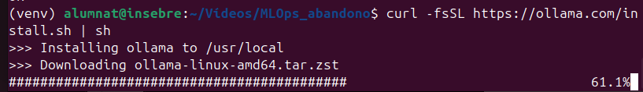
Després comprovem l'estat del servei per veure si Ollama està actiu.
systemctl status ollama
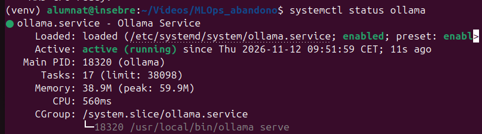
Quan el servei està en funcionament, descarreguem el model llama3.2:3b.
ollama pull llama3.2:3b
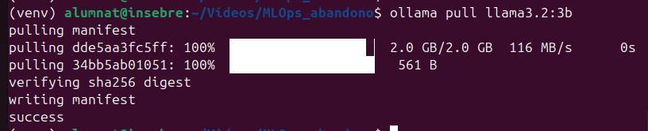
Per acabar, executem ollama list per comprovar que el model s'ha descarregat i apareix a la llista.
ollama list
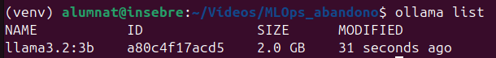
↑ Tornar a l'índex
4. Obrir la carpeta en l'editor
Finalment, obrim la carpeta del projecte amb un editor de codi. En aquest cas seleccionem Visual Studio Code en la finestra d'aplicacions i premem el botó per obrir-la.
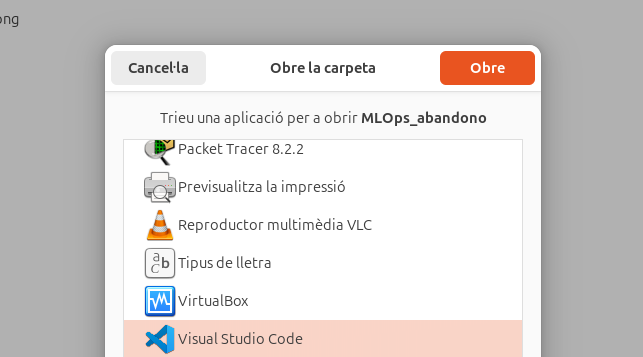
Quan s'obre Visual Studio Code, podem veure l'estructura de carpetes i els fitxers del projecte a l'explorador lateral.
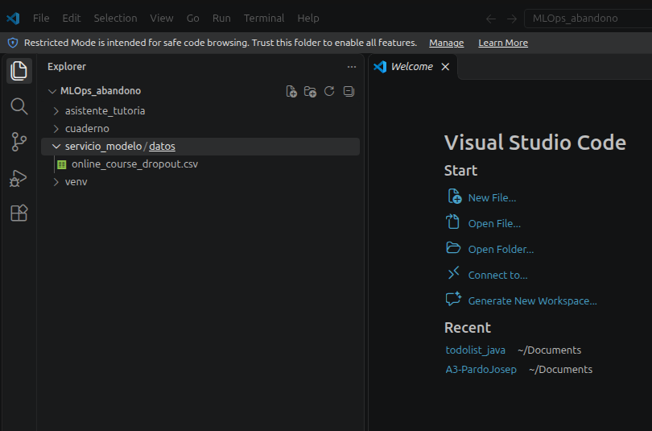
↑ Tornar a l'índex